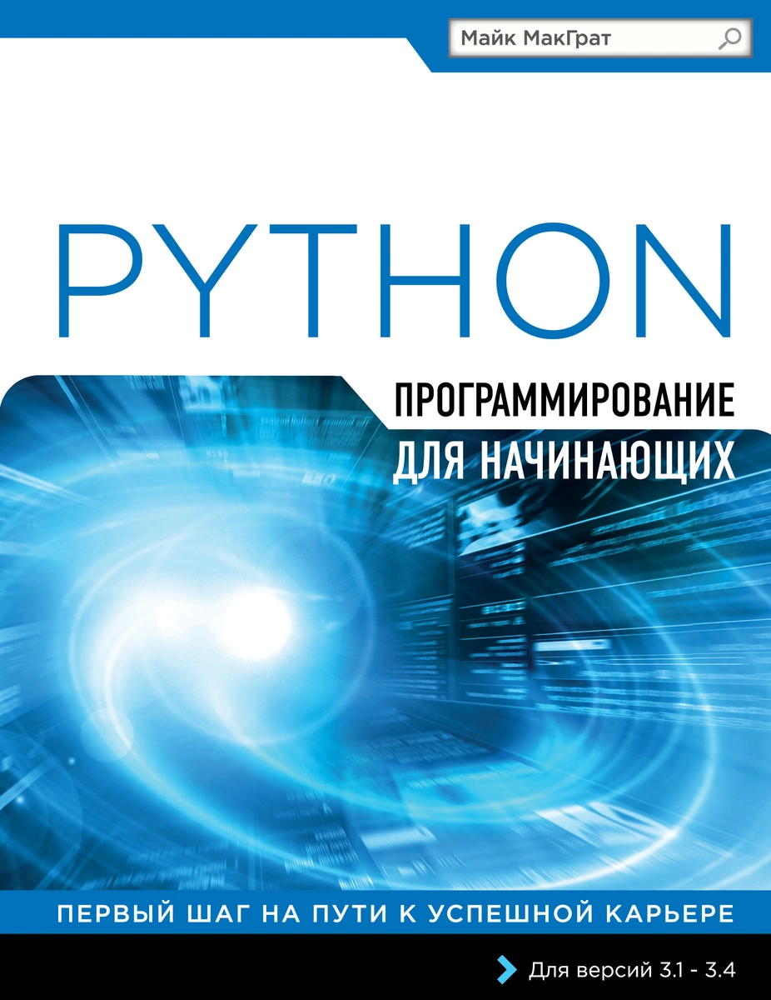

Программирование на Python для начинающих
|  |
|
| Автор: |
МакГрат Майк |
| Издательство: |
Эксмо |
| Год выпуска: |
2022 |
| Возрастные ограничения: |
12+ |
| Количество страниц: |
192 |
|
Описание
Книга «Программирование на Python для начинающих» является исчерпывающим руководством для того, чтобы научиться программировать на языке Python.
В этой книге с помощью примеров программ и иллюстраций, показывающих результаты работы кода, разбираются все ключевые аспекты языка. Установив свободно распространяемый интерпретатор Python, вы с первого же дня сможете создавать свои собственные исполняемые программы!
Познакомившись с основами языка, вы перейдете к объектно-ориентированному программированию и созданию CGI-сценариев для обработки данных веб-форм, научитесь создавать графические приложения с оконным интерфейсом и распространять их на другие устройства. В обучении вам помогут готовые примеры.
Книга «Программирование на Python для начинающих» идеально подойдет программистам, переключающимся на работу с другим языком, студентам и школьникам, изучающим язык Python.
Самое важное:
- функции,
- переменные,
- ключевые слова,
- методы,
- объекты,
- операторы,
- атрибуты,
- запросы,
- и многое другое.